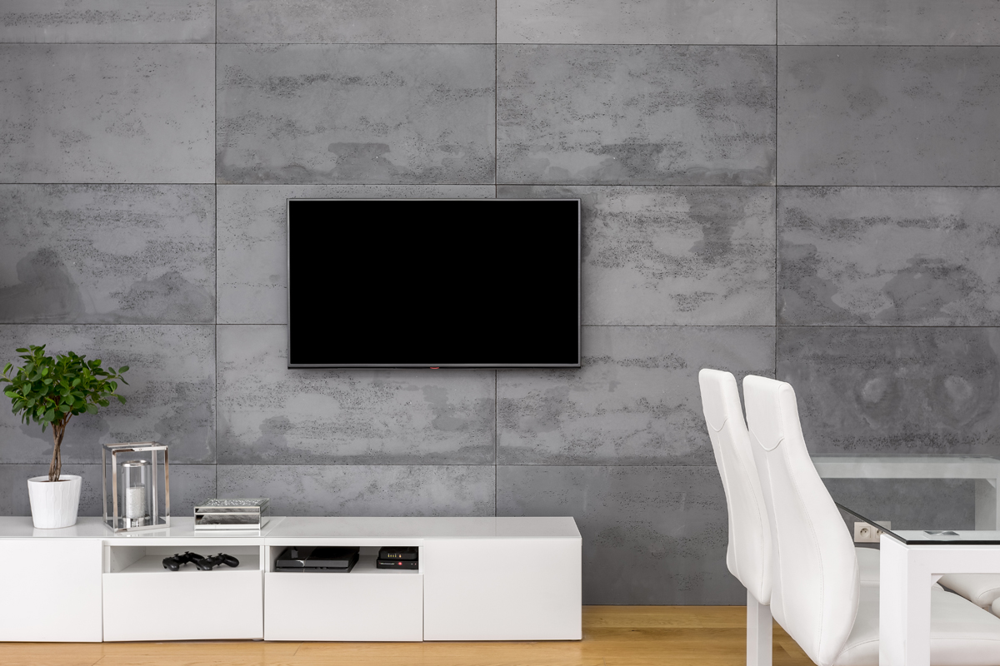

SHARE
Mounting your TV can instantly upgrade your space—whether it’s a living room, office, or commercial setting—giving it a cleaner, more modern look. But while it might seem like a simple DIY project, there are several common mistakes that can lead to poor viewing, safety issues, or unnecessary frustration. The good news? Most of them are easy to avoid with a little planning.
Mounting the TV Too High
One of the most common mistakes is placing the TV too high on the wall—often above eye level. While it might look good at first, it can quickly become uncomfortable for everyday viewing.
A good rule of thumb is to position the center of the screen at eye level when you’re seated. This reduces neck strain and creates a more natural viewing experience.
Not Finding the Studs
Drywall alone isn’t strong enough to support the weight of a TV. Skipping the step of locating wall studs can lead to a mount that isn’t secure—and in worst cases, a damaged wall or fallen TV.
Always use a stud finder and secure the mount directly into studs. If studs aren’t ideally placed, use proper mounting hardware designed for your wall type.

TV Installation for Client in Marietta, GA
Ignoring Cable Management
Nothing ruins the clean look of a mounted TV faster than a tangle of visible cables hanging below it.
Before installing, plan how you’ll manage wires:
- • In-wall cable management kits
- • Cord covers or raceways
- • Proper outlet placement behind the TV
A little extra effort here makes a big difference in the final result.
Choosing the Wrong Mount
Not all mounts are created equal. Using the wrong type can limit your viewing angles or make installation harder than it needs to be.
Common options include:
- • Fixed mounts for a low-profile look
- • Tilting mounts to reduce glare
- • Full-motion mounts for flexible viewing angles
Choosing the right one depends on your room layout and how you plan to watch TV.
Skipping the Level Check
Even a slight tilt can be noticeable once your TV is mounted. Many people assume it’s straight—only to realize later that it’s slightly off.
Use a level during installation and double-check before tightening everything down. Taking a few extra minutes here can save you from having to redo the work.
Conference Room for Office in Sandy Springs, GA
Not Considering Viewing Distance
Mounting your TV without thinking about how far away you’ll be sitting can affect both comfort and picture quality.
As a general guideline:
- • Larger TVs require more distance
- • Sitting too close can strain your eyes
- • Sitting too far reduces the immersive experience
Matching your TV size to your room helps you get the most out of your setup.
Overlooking Wall Type
Different wall materials require different mounting techniques. What works for drywall won’t necessarily work for brick, concrete, or plaster.
Make sure you:
- • Use the correct anchors and tools
- • Understand your wall structure
- • Adjust your installation method accordingly
Mounting your TV can transform any space—whether it’s your home, office, or a commercial environment—but only if it’s done right. By avoiding these common mistakes, you’ll end up with a setup that looks professional, delivers comfortable viewing, and remains secure for years to come.
If you want a truly seamless result, professional installation can take the guesswork out of the process and ensure everything is done safely and correctly the first time—especially in office and commercial environments like conference rooms, where clean presentation and reliable performance are critical. Partnering with a trusted provider like Oracle means your screens are installed with precision, optimized for visibility, and set up to support smooth meetings and presentations—so your team can focus on what matters, not the tech.